Dashboards
Unless otherwise noted, the data provided within the following dashboards reflects historical and official data that is reported to the State of Texas and The University of Texas System. These data sets are institutional and are representative of snapshots at a certain point in time (e.g., annually, term-based, etc.). These data sets do not reflect live or daily information.
Race and Ethnicity are self-reported and the values displayed are based on the Integrated Postsecondary Education Data System (IPEDS) criteria. Details on these criteria can be found on the National Center for Educational Statistics website. Nonresident aliens are displayed as “International” and “Other” includes Native American or Alaskan Native, and Native Hawaiian or Other Pacific Islander.
If you have any questions, contact us at DataRequest@uthscsa.edu
-
Student Enrollment
Student Enrollment information is derived from the Student Report (CBM001) as submitted to the Texas Higher Education Coordinating Board. The most recent semester may not be yet certified, but the dashboards display the most recently available information.
Student Demographics
Semester student counts by school, classification, academic load, gender and race/ethnicity.
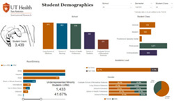
Enrollment Trends
Trends of student counts by school, classification, race/ethnicity and gender over the past five semesters. There are multiple pages in this report.
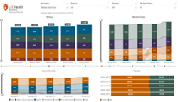
Enrollment by Texas County & U.S. State
County (Texas) and State of residence as collected on the Residency Questionnaire and reported on the CBM001. There are multiple pages in this report.
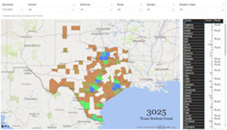
Annual Headcount
Unduplicated headcount of Fall, Spring, and Summer semesters combined over the past 5 academic years by school, classification, race/ethnicity and gender. Count of students by school, program, and sub-program are also included on page 2.
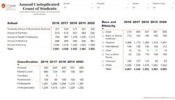
-
Degrees Awarded
Student Degrees information is derived from the Graduation Report (CBM009) as submitted to the Texas Higher Education Coordinating Board. The most recent semester may not be yet certified, but the dashboards display the most recently available information.
Note: Degrees awarded represent the number of degrees conferred in an academic year. It does not represent the number of students receiving awards; instead, it is the total number of degrees awarded, which may include multiple awards for a few students.
Degrees Awarded
Degrees awarded by school, degree level, race/ethnicity, and gender over the past 6 years (September 1 to August 31).
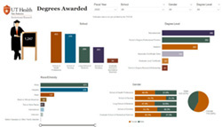
Degree Trends
Trends of degrees awarded by school, degree level, race/ethnicity, and gender over the past 6 years (September 1 to August 31). There are multiple pages in this report.
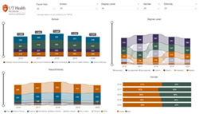
-
Programs
Academic Program Information
List of active academic programs and sub-program offered at UT Health San Antonio with CIP Code and Program SCH.
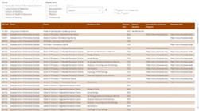
Student Achievement Goals
Display of metrics used to evaluate student achievement, such as graduation rates, time to degree, M.D. match rates, and exam pass rates to meet compliance with SACSCOC requirements for accreditation (8.1). There are multiple pages in this report.
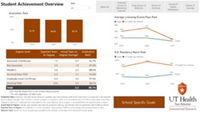
-
Programs
Medical Residents & Post-Doctoral Research Fellows
Counts of Medical Residents by primary care, gender, race (including Underrepresented Minorities), and Ethnicity as well as Post-Doctoral Research Fellows by gender, race, and ethnicity as reported to the Texas Higher Education Coordinating Board in the CBM00R Residents/Fellows Report. Also included are counts of non-ACGME accredited residents and number of ACGME approved programs. There are multiple pages in this report.
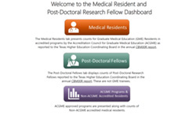
-
Employees
Faculty Data
Number of faculty by school, workload, effort, rank, tenure status, age, gender, and race/ethnicity as reported to the Texas Higher Education Coordinating Board in the CBM008 Faculty Report, displayed to highlight changes in metrics over time.
Data is collected every October 1st and is represented by Fiscal Year (e.g. Fiscal Year 2023 is data as of October 1st, 2022). The most recent semester may not be yet certified, but the dashboards display the most recently available information.
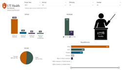
Faculty Trends
Number of faculty by school, workload, effort, rank, tenure status, age, gender, and race/ethnicity as reported to the Texas Higher Education Coordinating Board in the CBM008 Faculty Report, displayed to highlight changes in metrics over time.
Data is collected every October 1st and is represented by Fiscal Year (e.g. Fiscal Year 2023 is data as of October 1st, 2022). The most recent semester may not be yet certified, but the dashboards display the most recently available information.
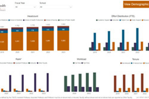
Employee Demographics
Number of employees by school, gender, race/ethnicity, and workload.
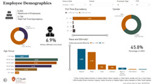
-
Clinical, Financial, and Research Statistics
Clinical
Statistics on UT Health Physicians, UT Health Dentistry Clinic, and Uncompensated care provided by faculty. There are multiple pages in this report.
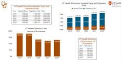
Financial
Fiscal year revenue, expenses, endowments, gifts & private grants. There are multiple pages in this report.
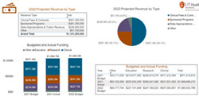
Research
Number of grants, NIH awards, organized research awards & expenditures, and technology commercialization statistics. There are multiple pages in this report.
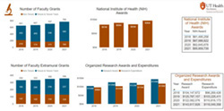
- Other Dashboards